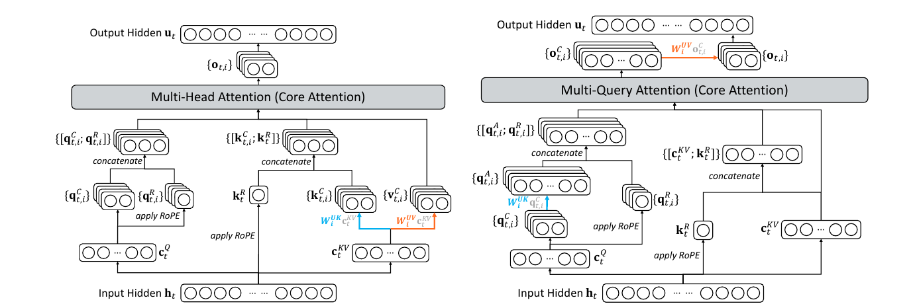
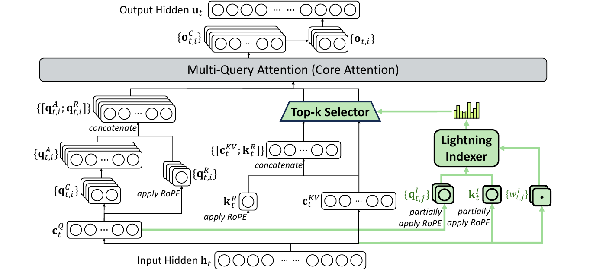
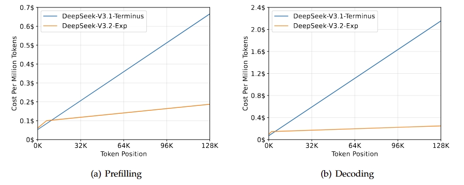
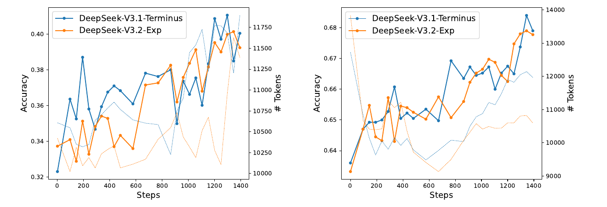

在 V3.1-Terminus 基础上，仅通过「继续训练」引入 DeepSeek 稀疏注意力（DSA），把核心注意力的计算复杂度从 O(L²) 降到 O(Lk)。长文本训练与推理大幅提速、API 降价 50%+，而模型质量几乎不变。
标准注意力让每个 token 都去看「前面所有 token」，序列越长成本按 平方 暴涨。DSA 给模型加了一个轻量「闪电索引器」先快速打分，每个 query 只挑出最相关的 2048 个 token 做真正的注意力计算——长上下文成本骤降，质量却和稠密版基本持平。它是 DeepSeek 迈向下一代架构的一块「实验性垫脚石」。
Transformer 的注意力机制里，序列中每一个 token 都要和它前面的所有 token 算一次相关性。当上下文长度为 L 时，这一步的计算量正比于 L²。上下文翻一倍，注意力的计算和显存读写就翻四倍。
对于今天的长文档问答、代码仓库级理解、长链思维推理、以及需要把大量历史塞进上下文的 Agent 来说，L 动辄几万到十几万。注意力很快从「不起眼的一步」变成主导整条推理成本的瓶颈——尤其在 128K 这种长度下。
直觉上，模型真的需要让每个 token 都精读前面十几万个 token 吗？显然不必。绝大多数注意力权重都集中在少数几个真正相关的 token 上，其余的几乎是浪费。稀疏注意力的核心赌注就是：只要能又快又准地挑出那几个关键 token，就能省掉绝大部分计算，而几乎不损失效果。难点在「又快又准地挑」——挑选本身不能比省下来的计算还贵。
V3.2-Exp 不是从零训练的新模型。它的起点是 DeepSeek-V3.1 系列的最后一版 V3.1-Terminus（上下文已扩展到 128K）。报告强调：相比 V3.1-Terminus，V3.2-Exp 唯一的架构改动就是引入 DSA——其余一切（参数规模、训练数据分布、后训练流程）都刻意对齐，目的就是干净地把「引入稀疏注意力」这一个变量的影响隔离出来。
V3.1 用的注意力是 DeepSeek 自家的 MLA（Multi-head Latent Attention，多头潜在注意力）。MLA 把每个 token 的 key/value 压缩成一个低维「潜在向量」来省显存，但它本质上仍是稠密的：每个 query 还是要扫过前面所有的潜在向量。这正是 DSA 要动手的地方——把「扫全部」换成「只扫挑出来的 top-k」。
MLA 有两种等价的展开方式。V3.1-Terminus 中：训练 / prefilling 用 MHA 模式（多头，各头有独立 KV），decoding 用 MQA 模式（多 query 共享同一份压缩潜在向量）。两种模式之间可以相互转换。

DSA 的原型由两个部件组成，配合完成「先选、再算」的两步走：一个负责快速打分挑人的闪电索引器，一个负责只对挑中者做注意力的细粒度选择机制。下面这张图是全文最重要的一张——它展示了 DSA 如何嵌进 MLA 的注意力流水线。

索引器要回答一个问题：对当前 query token hₜ 来说，前面的某个 token hₛ 值不值得细看？它给出一个索引分数 Iₜ,ₛ：
正因为「头少 + ReLU + FP8」，索引器虽然形式上仍是对所有 token 打分（复杂度 O(L²)），但每一分的单价极低，比让主注意力直接稠密计算便宜太多。
有了每个 query 的索引分数 {Iₜ,ₛ}，选择机制只取分数最高的 k 个对应的 KV 条目 {cₛ}，然后只在这些被选中的条目上做真正的注意力：
这里的「细粒度」是指：选择以单个 token / KV 条目为单位，而不是粗暴地按块（block）丢弃。报告称这是首次实现细粒度稀疏注意力，且在几乎不损质量的前提下大幅提效。训练时取的 k = 2048。
为了能从 V3.1-Terminus 继续训练而不是重训，DSA 直接实例化在 MLA 上。具体选 MLA 的 MQA 模式：让每个潜在向量（即 MLA 的 KV 条目）被该 token 的所有 query 头共享。这样一来，「被选中的 KV」对所有头是同一批，访存对齐，稀疏 kernel 才能真正跑出加速——否则各头各选各的，稀疏只是纸面上的。
难点在于：直接给一个训练好的稠密模型套上 top-k 稀疏，会因为分布突变而掉点。DeepSeek 的做法是分两阶段继续预训练，先让索引器学会模仿稠密注意力的「注意力偏好」，再放开稀疏。两阶段的数据分布都和 V3.1-Terminus 的 128K 长上下文扩展数据完全对齐。点击下面的「下一步」跟着走一遍。
这套设计里有一个特别关键的细节，值得单独点出：
专家蒸馏（Specialist Distillation）：先为每个领域各训练一个「专科模型」，都从同一个 V3.2 预训练基座微调而来，覆盖数学、竞赛编程、通用逻辑推理、Agent 编程、Agent 搜索五个专业领域，外加写作与通用问答。每个专科用大规模 RL 训练，再用它们生产领域数据来蒸馏最终模型。报告说：蒸馏后的模型只比专科略低，这点差距随后用 RL 训练就能补平。思考模式（长链 CoT）与非思考模式（直接回答）由不同模型分别生成数据。
混合 RL（Mixed RL Training）：算法仍是 GRPO。与以往 DeepSeek 多阶段 RL 不同，这次把推理、Agent、人类对齐三类训练合并进单一 RL 阶段。好处是既能平衡多领域表现，又能避开多阶段训练常见的「灾难性遗忘」。奖励设计：推理与 Agent 任务用基于规则的结果奖励 + 长度惩罚 + 语言一致性奖励；通用任务用「每条 prompt 自带评分细则（rubric）」的生成式奖励模型。整体权衡两对矛盾：长度 vs 准确率、语言一致性 vs 准确率。
因为训练配置刻意和 V3.1-Terminus 对齐，这套对比能干净地回答一个问题：引入稀疏，到底要付出多少质量代价？答案是——几乎没有。
DSA 把核心注意力从 O(L²) 降到 O(Lk)。虽然索引器本身仍是 O(L²)，但它的单价远低于稠密 MLA，所以端到端依然大幅加速。下图是在 H800 集群（按 2 USD/GPU·小时折算）实测的每百万 token 成本随位置变化：

跨多个领域的公开 benchmark 上，V3.2-Exp 与 V3.1-Terminus 互有胜负、整体持平：部分指标略涨（如 AIME 2025、Codeforces、BrowseComp），少数略降。作者对略降的几项给了诚实解释——不是稀疏伤了能力，而是 V3.2-Exp 生成的推理 token 更少；用「输出 token 数相当」的中间检查点对比时，差距就消失了。
| Benchmark（指标） | V3.1-Terminus | V3.2-Exp |
|---|---|---|
| General · 通用 | ||
| MMLU-Pro (EM) | 85.0 | 85.0 |
| GPQA-Diamond (Pass@1) | 80.7 | 79.9 |
| Humanity's Last Exam (Pass@1) | 21.7 | 19.8 |
| Search Agent · 搜索智能体 | ||
| BrowseComp (Acc.) | 38.5 | 40.1 |
| BrowseComp-zh (Acc.) | 45.0 | 47.9 |
| SimpleQA (Acc.) | 96.8 | 97.1 |
| Code · 代码 | ||
| LiveCodeBench (2408–2505) | 74.9 | 74.1 |
| Codeforces-Div1 (Rating) | 2046 | 2121 |
| Aider-Polyglot (Acc.) | 76.1 | 74.5 |
| Code Agent · 代码智能体 | ||
| SWE Verified (Agent) | 68.4 | 67.8 |
| SWE-bench Multilingual | 57.8 | 57.9 |
| Terminal-bench | 36.7 | 37.7 |
| Math · 数学 | ||
| AIME 2025 (Pass@1) | 88.4 | 89.3 |
| HMMT 2025 (Pass@1) | 86.1 | 83.6 |
绿色 = V3.2-Exp 更高，橙色 = 略低。GPQA / HLE / HMMT 的下降被作者归因于「生成 token 更少」，用 token 数相当的检查点对比时差距收敛。
作者还对比了两个模型在 BrowseComp 与 SWE Verified 上的 RL 训练曲线，二者走势紧密贴合，说明在 DSA 下继续训练是稳定的，并没有因为稀疏而出现训练动力学上的异常。

报告结尾很克制：尽管内部评测结果乐观，团队仍在真实世界的大规模场景里继续验证，以排查稀疏注意力架构可能存在的潜在局限。这也是它被命名为「Exp（实验版）」、并被定位为迈向下一代架构「中间一步」的原因。